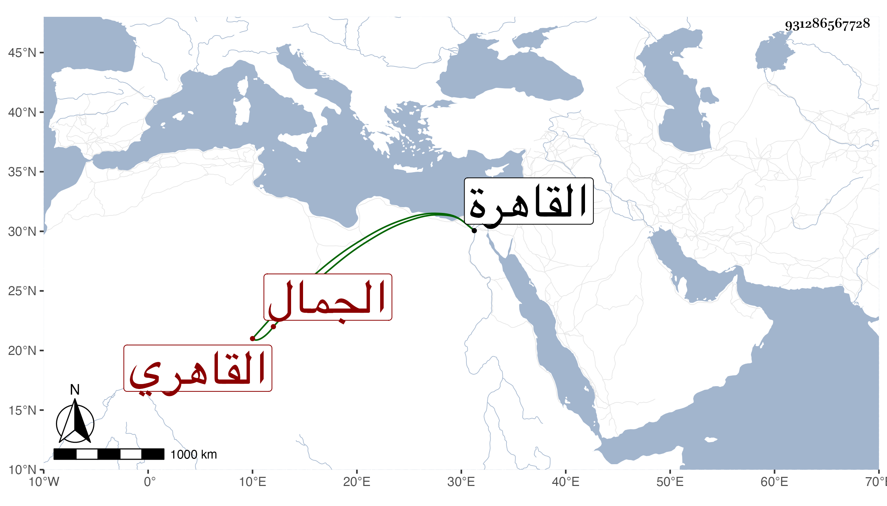

0902Sakhawi.DawLamic.ITO20230111-ara1.EIS1600.931286567728
Biography ID: 931286567728
1278
يوسف بن يغمور الجمال القاهري . ولد بها في حدود التسعين وسبعمائة ونشأ بها وصار خاصكيا في أيام الظاهر ططر ثم مقدم البريدية في آخر أيام الأشرف ثم نقله الظاهر جقمق إلى نيابة قلعة صفد ثم صرفه عنها إلى أتابكيتها ، وقدم حينئذ القاهرة فأعيد إلى النيابة المذكورة ، واستمر فيها حتى مات في أوائل شعبان سنة ست وخمسين رحمه الله .
